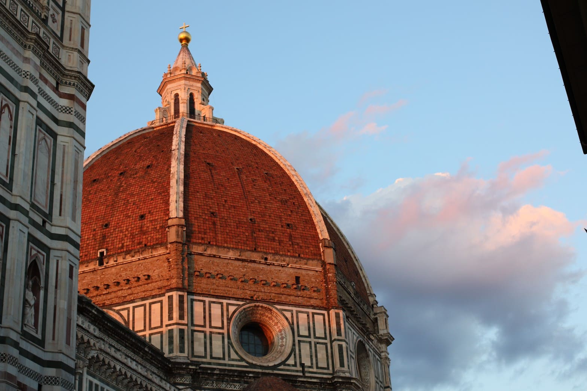
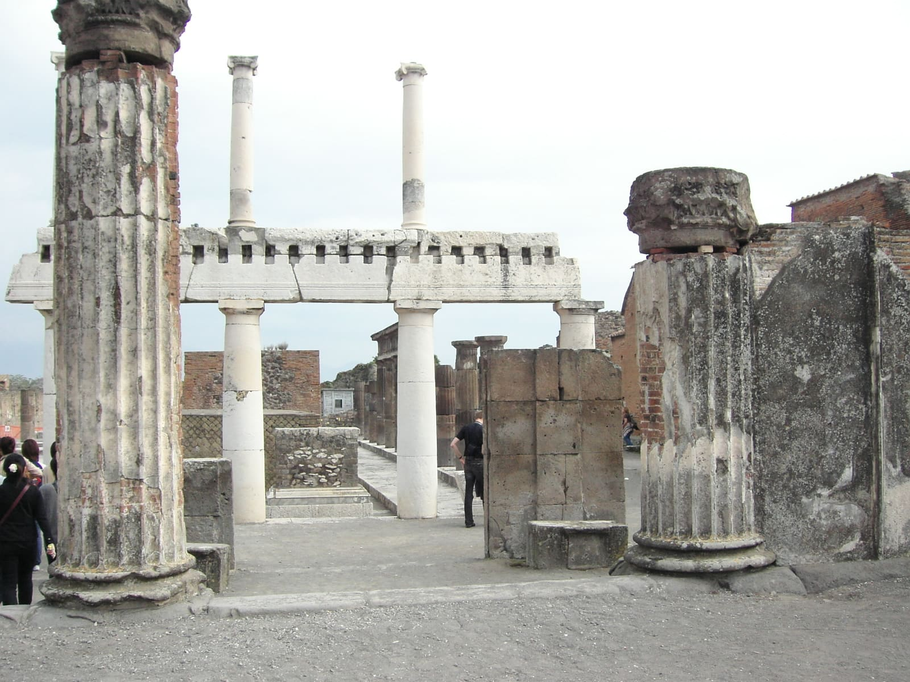

- フィレンツェ歴史地区
-
今もルネッサンスの華やかさを色濃く残す「花の都」フィレンツェの歴史地区。 街全体が芸術で溢れ、「屋根のない美術館」と称されるほどの美しさを誇っています。
- ピサのドゥオモ広場
-
「斜塔の街」として有名なピサには、緑あふれる世界遺産のドゥオーモ広場があります。 ピサ・ロマネスクの最高傑作ともいわれるてドゥオモは、列柱の並ぶ白大理石の大伽藍が美しい大聖堂。

- ポンペイ遺跡
-
イタリアの裕福な商業都市ポンペイが、ヴェスヴィオ火山の大噴火により、たった19時間で死の灰になったことは、映画になるほど有名な現実です。 一瞬にして灰に埋もれたため、街すべてがそのまま残されており、イタリアの世界遺産として登録されました。
歴史History
イタリアの歴史は、古代ローマ帝国の興隆から始まり、地中海世界を支配する大国として繁栄しました。しかし、帝国の崩壊後、イタリアは長く分裂の時代を迎え、都市国家が分立し、教皇の影響力が強まりました。中世末期にはルネサンスが花開き、レオナルド・ダ・ヴィンチやミケランジェロといった天才たちが芸術と文化を大きく発展させました。19世紀には統一運動が起こり、ガリバルディらの活躍によってイタリア王国が成立。その後、二度の世界大戦を経て、現代のイタリアは共和国として発展し、EUの主要メンバーとして国際社会で重要な役割を担っています。 統一運動が起こり、ガリバルディらの活躍によってイタリア王国が成立。その後、二度の世界大戦を経て、現代のイタリアは共和国として発展し、EUの主要メンバーとして国際社会で重要な役割を担っています。